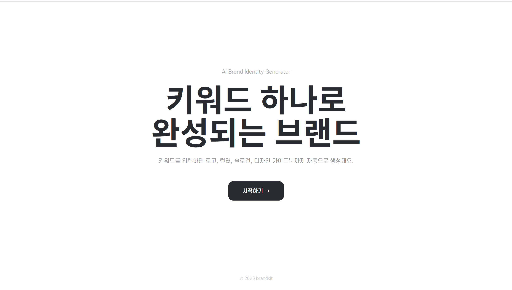

브랜드 키워드를 입력하면 로고, 컬러, 톤앤 매너가 통합된 실행 가능한 인터렉티브 디자인 시스템 가이드북을 만들어주는 서비스

GitHub 계정으로 로그인하면 댓글이 본인 리포의 GitHub Discussions에 자동 저장됩니다.
💬 이 프로젝트 어떠세요?
GitHub 계정으로 로그인하면 댓글이 본인 리포의 GitHub Discussions에 자동 저장됩니다.